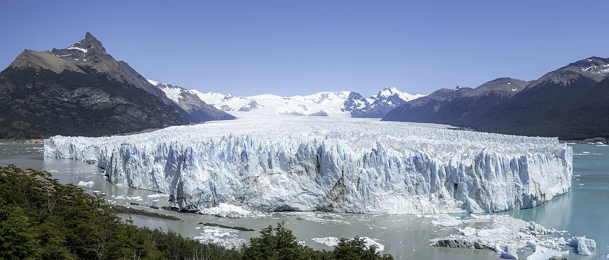

South America
Brazil
Coastal cities, forest landscapes and the rhythms of samba
5 attractions
5 countries to discover
Find a place that speaks to your curiosity. Explore its landmarks, local food, traditions and everyday adventures.
South America
Coastal cities, forest landscapes and the rhythms of samba

South America
Andean stonework, coastal flavours and living traditions

South America
Tango streets, Andean vineyards and Patagonia's vast landscapes

South America
Desert skies, Pacific culture and Patagonia's granite peaks

South America
Caribbean fortresses, mountain cities and many regional flavours